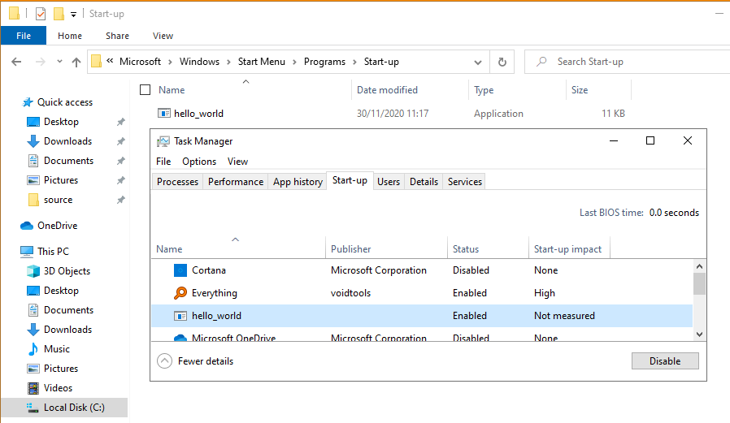
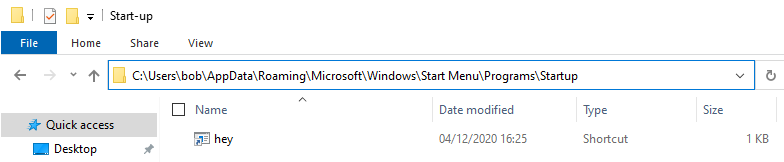

# Startup Folder
https://attack.mitre.org/beta/techniques/T1547/001/Programs placed within the startup folder will execute when a user logs in.
There are 2 startup folders: a system-wide startup folder that runs for all users, and an individual user folder.
Current user / user's Start menu:
C:\Users\[Username]\AppData\Roaming\Microsoft\Windows\Start Menu\Programs\Startup%APPDATA%\Microsoft\Windows\Start Menu\Programs\StartupSystem-wide / All Users Start menu:
C:\ProgramData\Microsoft\Windows\Start Menu\Programs\StartUp%ALLUSERSPROFILE%\Microsoft\Windows\Start Menu\Programs\StartupThe binary will show up
Task Manger -> Start-up on Windows 10.
## .lnk Variant
.lnk files are shortcuts.
A sneakier way to drop persistence into the startup folder is to drop an
.lnk which is a shortcut to your executable.
Here's a Visual Basic script to create a shortcut
(source:
https://www.codeproject.com/Articles/11467/How-to-create-short-cuts-link-files)
' Make sure variables are declared.
option explicit
' Routine to create "mylink.lnk" on the Windows desktop.
sub CreateShortCut()
dim objShell, strDesktopPath, objLink
set objShell = CreateObject("WScript.Shell")
strDesktopPath = objShell.SpecialFolders("Desktop")
set objLink = objShell.CreateShortcut(strDesktopPath & "\hey.lnk")
objLink.Arguments = ""
objLink.Description = ""
objLink.TargetPath = "c:\users\bob\desktop\hello_world.exe"
objLink.WindowStyle = 1
objLink.WorkingDirectory = "c:\users\bob\desktop"
objLink.Save
end sub
' Program starts running here.
call CreateShortCut()
Run the visual basic script with
wscript.exewscript.exe create_shortcut.vbsAnd drop your
.lnk file into StartUp
